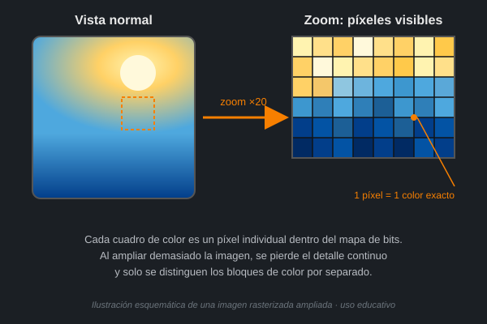
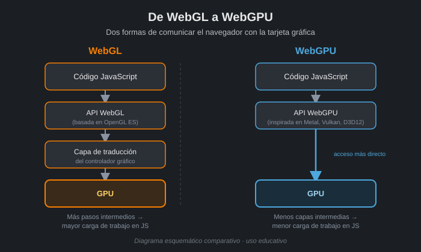

Cinco momentos de la evolución
1963 · Sketchpad: dibujos geométricos interactivos
Limitación anterior: Antes de Sketchpad, la informática funcionaba por lotes: se enviaban instrucciones a la computadora y había que esperar a que las procesara para ver un resultado. Aunque ya existían por separado las pantallas CRT y los lápices ópticos, no había un programa que los combinara para crear y corregir un dibujo geométrico al instante.
Cambio: Sketchpad reunió el dibujo directo en pantalla con la selección y edición inmediata mediante el lápiz óptico. Guardaba las figuras como geometría estructurada (puntos, líneas y arcos con sus relaciones), no como una simple imagen, e introdujo restricciones (como mantener una línea horizontal) y símbolos reutilizables.
Impacto: Al mover o cambiar una parte de la figura, las piezas conectadas se actualizaban automáticamente gracias a las restricciones definidas. Esto evitaba rehacer el dibujo completo cada vez que se necesitaba un ajuste y permitía corregir errores al instante.
Ejemplo actual: Figma, donde se dibujan, mueven y modifican figuras geométricas directamente en pantalla, manteniendo relaciones y restricciones entre los elementos.

Crédito: Koder.ai, "Sketchpad de Ivan Sutherland: nacimiento de los gráficos interactivos". koder.ai
Imágenes rasterizadas se popularizan en la computación personal
Limitación anterior: Un sistema vectorial describe líneas y figuras mediante fórmulas matemáticas, así que sería muy difícil representar el detalle fino de una fotografía real: texturas, sombras y degradados de color que no se pueden reducir a simples formas geométricas.
Cambio: La imagen rasterizada guarda el color exacto de cada punto pequeño, llamado píxel, organizado en una cuadrícula o mapa de bits. Esto permite representar fotografías reales con fidelidad, en lugar de solo formas y contornos.
Impacto: Se puede retocar cada píxel o una pequeña zona de la fotografía de forma independiente (brillo, color, nitidez), lo que permite ediciones muy detalladas, aunque la imagen pierde calidad si se agranda o escala demasiado.
Ejemplo actual: Photoshop, una aplicación que permite cambiar píxeles o zonas específicas de una imagen rasterizada.

Ilustración propia elaborada para este trabajo, inspirada en el concepto explicado por Hostingplus, "¿Qué es una imagen rasterizada?". hostingplus.cl
Hardware especializado: gráficos en tiempo real con la GPU
Limitación anterior: Sin un procesador dedicado a gráficos, un retraso en el cálculo dificultaba que un videojuego o simulador respondiera a tiempo a las acciones de una persona; si la imagen se actualizaba tarde, el movimiento se veía entrecortado y se rompía la sensación de control inmediato.
Cambio: La GPU (unidad de procesamiento gráfico) acelera los cálculos gráficos mediante procesamiento paralelo, usando cientos o miles de núcleos que trabajan al mismo tiempo, mucho más rápido que una CPU de propósito general.
Impacto: Con mayor fluidez, el movimiento se ve continuo y las acciones de la persona se reflejan casi al instante en pantalla, sin interrumpir la sensación de control en tiempo real.
Ejemplo actual: Un simulador de conducción o un juego de disparos en primera persona, que necesitan responder de inmediato a las acciones del jugador.

Crédito: Data Center Market, "Qué es una GPU: características e importancia para los data centers". datacentermarket.es
Canvas desde 2004 · WebGL desde 2011: gráficos en el navegador
Limitación anterior: Antes, algunos sitios dependían de complementos instalados aparte (como Flash) para mostrar contenido interactivo. Instalar y mantener un complemento causaba problemas de compatibilidad entre navegadores, actualizaciones constantes y riesgos de seguridad.
Cambio: Canvas dibuja gráficos 2D mediante código directamente en el navegador. WebGL, por su parte, permite comunicarse directamente con la GPU para acelerar los gráficos por hardware, haciendo posible renderizar escenas 3D complejas e interactivas sin instalar nada adicional.
Impacto: El sitio pudo ofrecer gráficos interactivos, animaciones y experiencias 3D inmersivas directamente en la página, sin pedir que la persona instalara ningún complemento.
Ejemplo actual: three.js, una biblioteca usada para crear demos y experiencias 3D que se exploran directamente en el navegador.

Crédito: JoliCode, "WebGL, the wow effect". jolicode.com
2023 · WebGPU: acceso más directo a la GPU desde el navegador
Limitación anterior: WebGL, aunque acelera gráficos por hardware, está basado en un estándar antiguo (OpenGL ES) que limita el acceso a funciones modernas de las tarjetas gráficas, como el cómputo general en GPU para tareas distintas a dibujar gráficos.
Cambio: WebGPU es una nueva API web que no es una adaptación de un estándar previo, sino que retoma conceptos de APIs nativas modernas (Metal, Vulkan y Direct3D 12). Ofrece una carga de trabajo de JavaScript mucho más reducida para los mismos gráficos y da acceso a capacidades avanzadas que WebGL no proporciona.
Impacto: Las aplicaciones web pueden ejecutar gráficos más avanzados y también cómputo general en la GPU con mejor rendimiento; por ejemplo, se reportan mejoras de más del triple en la velocidad de inferencia de modelos de aprendizaje automático dentro del navegador.
Ejemplo actual: TensorFlow.js, que ya cuenta con versiones optimizadas para aprovechar WebGPU al ejecutar modelos de inteligencia artificial en el navegador.

Ilustración propia elaborada para este trabajo, basada en la explicación de Chrome Developers, "WebGPU: descripción general". developer.chrome.com
Laboratorio de color
Experimento 1 · Cuando desaparece el tono (Negro, Blanco, Gris)
Predicción: Cuando R, G y B son iguales, el máximo y el mínimo de los tres canales serán el mismo número, por lo que el delta (máximo − mínimo) será 0 y, con él, la saturación también será 0%, sin importar qué tan claro u oscuro sea el gris.
Datos: Negro RGB(0,0,0) → Máx/mín/Δ = 0/0/0 → HSV(0°, 0%, 0%) → HSL(0°, 0%, 0%) → CMY(100%, 100%, 100%). Blanco RGB(255,255,255) → Máx/mín/Δ = 255/255/0 → HSV(0°, 0%, 100%) → HSL(0°, 0%, 100%) → CMY(0%, 0%, 0%). Gris RGB(128,128,128) → Máx/mín/Δ = 128/128/0 → HSV(0°, 0%, 50.2%) → HSL(0°, 0%, 50.2%) → CMY(49.8%, 49.8%, 49.8%).
Conclusión basada en valores: En los tres casos R=G=B, por lo que el delta siempre es 0. Con delta 0 la saturación también es 0% en los tres, y solo cambia el Valor/brillo (0%, 50.2%, 100%). El tono aparece como 0° pero no representa un color real, porque sin delta no hay forma de calcular en qué sector del círculo cae el color. Así, cuando R=G=B, el tono desaparece y el color queda definido solo por su brillo: una escala de grises.
Experimento 2 · Mismo sector, distinta intensidad (Rojo puro vs. rojo apagado)
Predicción: El tono se conservará igual entre RGB(128,0,0) y RGB(128,64,64), porque el canal Rojo sigue siendo el más alto en ambos casos y deberían caer en el mismo sector del círculo de tono. Lo que podría cambiar es la saturación, porque al acercar G y B hacia el valor de R, el color se ve menos puro y más apagado.
Datos: RGB(128,0,0) → Máx/mín/Δ = 128/0/128 → HSV(0°, 100%, 50.2%) → HSL(0°, 100%, 25.1%) → CMY(49.8%, 100%, 100%). RGB(128,64,64) → Máx/mín/Δ = 128/64/64 → HSV(0°, 50%, 50.2%) → HSL(0°, 33.3%, 37.6%) → CMY(49.8%, 74.9%, 74.9%).
Conclusión basada en valores: El tono se mantuvo en 0° en ambos casos, confirmando que están en el mismo sector (rojo). Lo que cambió fue la saturación, que bajó de 100% a 50% al reducirse el delta de 128 a 64. El Valor se mantuvo igual (50.2%) porque el canal máximo no cambió, pero la Luminosidad sí aumentó (de 25.1% a 37.6%) porque el mínimo subió de 0 a 64. Esto muestra que la saturación depende de qué tan separados están los canales (el delta), mientras que el tono depende de cuál canal domina y cómo se relacionan los otros dos con él.
Experimento 3 · Comparación en una imagen real (Agua vs. Cielo)
Predicción: La zona de Agua tendrá mayor saturación y menor luminosidad que el Cielo, porque aunque ambas comparten un tono azul-cian, el agua suele reflejar un color más intenso y oscuro, mientras que el cielo se ve más claro y desaturado por la luz directa del sol.
Datos: Agua, posición 369,436 → RGB(7, 174, 183) → CMY(97.3%, 31.8%, 28.2%) → HSV(183.1°, 96.2%, 71.8%) → HSL(183.1°, 92.6%, 37.3%). Posición en el círculo de tono: 183.1°, sector cian.
Conclusión basada en valores: El Agua dio un tono cian (183.1°) con saturación muy alta (96.2%). Al activar la simulación en escala de grises, el tono desaparece y solo queda el Valor (71.8%), por lo que la zona pasa a verse como un gris medio-claro. El Sol sigue distinguiéndose en la imagen en gris porque su valor de brillo es mucho más alto (cercano al blanco), mientras que Agua y Tierra se confunden más entre sí al tener valores de brillo más parecidos.
De la fórmula al algoritmo
Para convertir un color de RGB a HSV, primero hay que normalizar cada canal: convertirlo de una escala de 0–255 a una escala de 0–1, dividiendo cada valor entre 255. Después se calcula el máximo (el canal más alto de los tres) y el mínimo (el canal más bajo). La diferencia entre ambos es el delta (Δ = máx − mín), y es la pieza clave de todo el cálculo: si el delta es 0, significa que los tres canales son iguales (R=G=B), es decir, un color acromático (gris, blanco o negro), y en ese caso tanto el tono como la saturación se reportan como 0, porque no hay ninguna diferencia entre canales que permita ubicar un color en el círculo de tono. Si el delta es mayor que 0, el tono se calcula viendo cuál canal es el máximo y cómo se relacionan los otros dos con la diferencia; la saturación se calcula dividiendo el delta entre el máximo; y el valor (V) es simplemente el máximo normalizado.
// Función probada: convierte RGB (0-255) a HSV
function rgbAHsv(r, g, b) {
// 1. Normalizar cada canal a una escala de 0 a 1
r /= 255;
g /= 255;
b /= 255;
// 2. Calcular máximo, mínimo y delta
const maximo = Math.max(r, g, b);
const minimo = Math.min(r, g, b);
const delta = maximo - minimo;
let h = 0;
let s = 0;
const v = maximo; // El valor (V) es el canal máximo normalizado
// 3. Caso acromático: si no hay diferencia entre canales, no hay tono
if (delta === 0) {
h = 0;
s = 0;
} else {
// 4. Saturación: qué tan lejos está del gris de ese mismo brillo
s = delta / maximo;
// 5. Tono: depende de cuál canal es el máximo
if (maximo === r) {
h = 60 * (((g - b) / delta) % 6);
} else if (maximo === g) {
h = 60 * ((b - r) / delta + 2);
} else {
h = 60 * ((r - g) / delta + 4);
}
if (h < 0) h += 360;
}
return {
h: Math.round(h),
s: Math.round(s * 100),
v: Math.round(v * 100),
};
}
// Prueba con los datos del Experimento 1 (Gris)
console.log(rgbAHsv(128, 128, 128)); // { h: 0, s: 0, v: 50 }
// Prueba con los datos del Experimento 3 (Agua)
console.log(rgbAHsv(7, 174, 183)); // { h: 183, s: 96, v: 72 }
Conclusión
Antes pensaba que el tono, la saturación y el brillo eran tres propiedades completamente independientes entre sí, casi como si un programa "adivinara" el color a partir de reglas separadas para cada una. La evidencia de los tres experimentos de color cambió mi idea porque mostró que las tres dependen exactamente de los mismos tres números (R, G y B) y de una sola operación clave: el delta. En el Experimento 1, cuando el delta es 0, el tono simplemente deja de existir y solo queda el brillo. En el Experimento 2, cuando el delta cambia sin que el canal dominante cambie, solo se mueve la saturación (de 100% a 50%), mientras el tono permanece fijo en 0°. Y en el Experimento 3, con una imagen real, esas mismas reglas explican por qué el Sol sigue distinguiéndose en escala de grises (su Valor es mucho más alto) mientras Agua y Tierra se confunden entre sí. De la misma forma, ver la evolución histórica —de Sketchpad, que apenas podía dibujar líneas con restricciones, hasta WebGPU, que permite renderizar escenas complejas y hasta modelos de inteligencia artificial directamente en el navegador— me hizo entender que los gráficos por computadora no avanzaron por un solo invento genial, sino por una cadena de soluciones, cada una resolviendo la limitación técnica de la anterior.